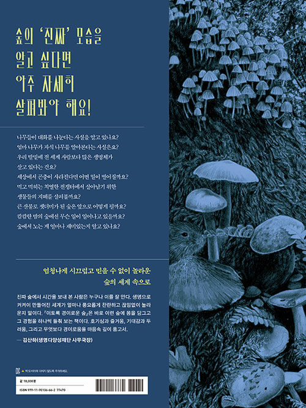
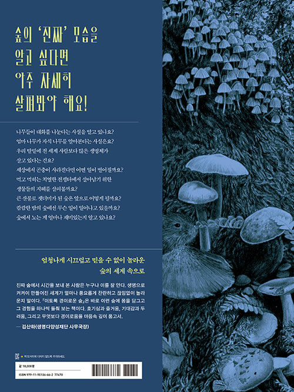

이토록 경이로운 숲
오싹하고 축축하고 떠들썩한 생명의 세계
얀 파울 스퀴턴 글, 메디 오베렌도르프 그림 / 정신재 옮김 / 김산하 감수
 

2022.04.20. 출간 / 72쪽 / 320*240mm / 양장 / 어린이 과학(생물학)
오싹하고 축축하고 떠들썩한 생명의 세계,
숲속으로 탐험을 떠나 볼까요?
지금까지 이런 숲 책은 없었을 거예요. 푸릇푸릇한 숲 그림이 나오지 않거든요. 하지만 멋스러운 연필그림이 가득해요. 근사한 분위기의 숲 세밀화 속에 숨은 동식물을 찾는 재미도 쏠쏠하죠. 그리고 또 하나, 『이토록 경이로운 숲』은 우리 상상 속의 화목한 숲이 아닌 숲의 진짜 모습을 보여 줍니다. 먹고 먹히는 동물의 세계를 있는 그대로 묘사하고, 큰불로 모든 것이 홀랑 타 버린 숲에서 자연이 어떻게 왕성하게 회복하는지를 들려주죠. 숲속에서 볼 수 있는 풍경에는 감탄을 자아내는 커다란 나무도 있지만, 그 아래를 보면 올빼미가 토해 낸 다른 동물의 두개골과 털이 섞인 공 모양의 ‘펠릿’이 굴러다닌다는 것도 알려 줘요. 어두컴컴한 밤의 숲, 얼어붙은 겨울 숲, 황량하고 메마른 숲 풍경은 지금껏 보아 온 숲 그림책과는 확연히 다른 이 책만의 매력입니다. 어때요, 푸르고 평화로운 곳으로만 생각했던 숲이 이제 색다르게 보이나요?
숲속 생물에 관한 흥미로운 상식부터 서로 연결되어 살아가는 생명의 지혜는 물론 숲을 즐기는 방법까지, 숲에 관한 거의 모든 것을 담아낸 이 책은 어린이들의 생태 감수성을 반짝 일깨워 줄 거예요. 자, 그럼 오싹하고 축축하고 떠들썩한 ‘진짜’ 숲의 모습을 함께 만나 볼까요? 엄청나게 시끄럽고 믿을 수 없이 놀라운 숲의 세계로 여러분을 초대합니다!